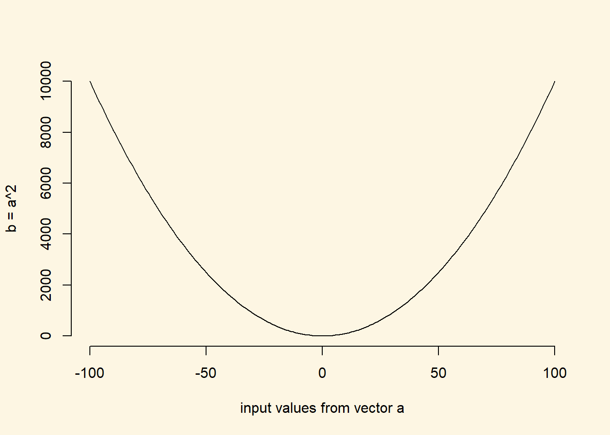

1.2 Solutions
1.2.1 Exercise 3
Calculate the square root of 1369 using the sqrt() function.
sqrt(1369)[1] 371.2.2 Exercise 4
Square the number 13 using the ^ operator.
13^2[1] 1691.2.3 Exercise 5
What is the result of summing all numbers from 1 to 100?
# sequence of numbers from 1 to 100 in steps of 1
numbers_1_to_100 <- seq(from = 1, to = 100, by = 1)
# sum over the vector
result <- sum(numbers_1_to_100)
# print the result
result[1] 5050The result is 5050.
1.2.4 Exercise 6
Create the variable income with the values form our Berlin sample in R.
# create the income variable using the c() function
income <- c(
19395, 22698, 40587, 25705, 26292, 42150, 29609, 12349, 18131,
20543, 37240, 28598, 29007, 26106, 19441, 42869, 29978, 5333,
32013, 20272, 14321, 22820, 14739, 17711, 18749
)1.2.5 Exercise 7
Describe Berlin income using the appropriate measures of central tendency and dispersion.
We use the mean for the central tendency of income. The variable is interval scaled and the mean is the appropriate measure of central tendency for interval scaled variables. Our income variable is also normally distributed. Income distributions in most countries are right skewed. Therefore, the central tendency of income is often described using the median.
When asked, e.g., in an exam, to describe the central tendency of an interval scaled variable, use the mean. You can also use the median if you tell us why.
# central tendency of income
mean(income)[1] 24666.24# dispersion
sd(income)[1] 9467.383Average income in our Berlin sample is 24666.24. The average difference from that value is 9467.38.
1.2.6 Exercise 8
Compute the average deviation without using the sd() function.
We do this in several steps. First, we compute the mean.
mean.income <- sum(income) / length(income)
# let's print the mean
mean.income[1] 24666.24Second, we take the differences between each individual realisation of income and the mean of income. The result must be a vector with the same amount of elements as the income vector.
# individual differences between each realisation of income and the mean of income
diffs.from.mean <- income - mean.income
# let's print the vector of differences
diffs.from.mean [1] -5271.24 -1968.24 15920.76 1038.76 1625.76 17483.76 4942.76
[8] -12317.24 -6535.24 -4123.24 12573.76 3931.76 4340.76 1439.76
[15] -5225.24 18202.76 5311.76 -19333.24 7346.76 -4394.24 -10345.24
[22] -1846.24 -9927.24 -6955.24 -5917.24You may be surprised that this works. After all, income is a vector with 25 elements and mean.income is a scalar (only one value). R treats all variables as vectors. It notices that mean.income is a shorter vector than income. The former has 1 element and the latter 25. The vector mean.income is recycled, so that it has the same length as income where each element is the same: the mean of income. If you did not understand this don’t worry. The important thing is that it works.
Our next step is to square the differences from the mean.
# square each element in the diffs.from.mean vector
squared.diffs.from.mean <- diffs.from.mean^2
# print the squared vecto
squared.diffs.from.mean [1] 27785971 3873969 253470599 1079022 2643096 305681864 24430876
[8] 151714401 42709362 17001108 158099441 15458737 18842197 2072909
[15] 27303133 331340472 28214794 373774169 53974882 19309345 107023991
[22] 3408602 98550094 48375363 35013729We squared each individual element in the vector. Therefore, our new variable squared.diffs.from.mean still has 25 elements.
Squaring a value does two things. First, all values in our vector have become positive. Second, the marginal increase increases with distance, i.e., values that are close to the mean are only somewhat larger whereas values that are further from the mean become way larger. To see this, lets plot the square (we haven’t shown you the plot function yet, but we will do this next seminar).
# a vector of x values from negative 100 to positive 100
a <- seq(from = -100, to = 100, length.out = 200)
# the square of that vector
b <- a^2
# we plot the input vector a against b, where b is on the y-axis
plot(
x = a, # x-axis values
y = b, # y-axis values
bty = "n", # no border around plot
type = "l", # connect individual dots to a line
xlab = "input values from vector a", # x axis label
ylab = "b = a^2" # y axis label
)
In this plot, you should see that the slope of the line increases, the further we are from 0. We are taking individual differences from the mean. Hence, if a value is exactly at the mean, the difference is zero. The further, the value is from the mean (in any direction), the larger the output value.
We will sum over the individual elements in the next step. Hence, values that are further from the mean have a larger impact on the sum than values that are closer to the mean.
In the next step, we take the sum over our squared deviations from the mean
# sum over squared deviations vector
sum.of.squared.deviations <- sum(squared.diffs.from.mean)
# print the sum
sum.of.squared.deviations[1] 2151152127By summing over all elements of a vector, we end up with a scalar. The sum is 2151152126.56.
We divide the sum of squared deviations by \(n-1\). Recall, that \(n\) is the number of observations (elements in the vector) and \(-1\) is our sample adjustment.
# get the variance
var.income <- sum.of.squared.deviations / ( length(income) - 1 )
# print the variance
var.income[1] 89631339The squared average deviation from mean income is 89631338.61.
In the last step, we take the square root over the variance to return to our original units of income.
# get the standard deviation
sqrt(var.income)[1] 9467.383The average deviation from mean income in Berlin (24666.24) is 9467.38.
1.2.7 Exercise 9
What is the level of measurement of the variable in the Sunday Question?
The variable measures vote choice. The answers are categories, the parties, without any specific ordering. The level of measurement is called categorical or nominal.
1.2.8 Exercise 10
Take the most recent poll and describe what you see in terms of central tendency and dispersion.
The most recent poll was carried out by Infratest/dimap on Thursday, 6 September. The most common value, the mode, is the appropriate measure of central tendency. Christian Democrat (CDU/CSU) is the modal category. Dispersion of a categorical variable is the proportion in each category which we see displayed on the website:
| Party | Proportion |
|---|---|
| CDU/CSU | 0.29 |
| SPD | 0.18 |
| GREEN | 0.14 |
| FDP | 0.08 |
| THE LEFT | 0.10 |
| AFD | 0.16 |
| other | 0.05 |